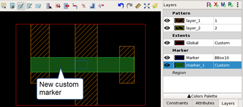

Adding Markers to a Pattern
You can add marker layers to a pattern using the Calibre Pattern Matching GUI. When a pattern matching run is performed, the marker shapes are output to show where a match occurs. Patterns can have multiple markers of different types.
See “Marker Layer” before deciding what markers to add to a pattern. It is usually more efficient to add computed markers (bbox, bbox10, empty, drawn, and matched) at compile time and only add custom markers to the patterns in the pattern matching database (PMDB). Markers of any type that are defined in a pattern override compile-time markers of the same name.
See these topics for information on adding compile-time markers:
“Compiling a Pattern Library with the Calibre Pattern Matching GUI”
“compile” (the pdl_lib_mgr compile utility)
Prerequisites
A pattern library is open in the Calibre Pattern Matching GUI. See “Invoking the Calibre Pattern Matching GUI”.
Procedure
- Click the Add
Marker Layer button (
 ).
). - (Optional) If you added a
Custom marker layer, you need to add a marker shape. The shapes
for the other marker types are determined automatically.
Do the following to draw a custom marker shape:
- Click the marker name to select the layer. This is done automatically after adding a marker layer.
- Select
the rectangle (
 ) or
polygon (
) or
polygon ( ) drawing
tool and draw the desired marker shape.
) drawing
tool and draw the desired marker shape.
The following image shows a new marker shape, where the fill for the marker_1 layer has been changed using the Colors Palette (located at the bottom of the Layers tab).
